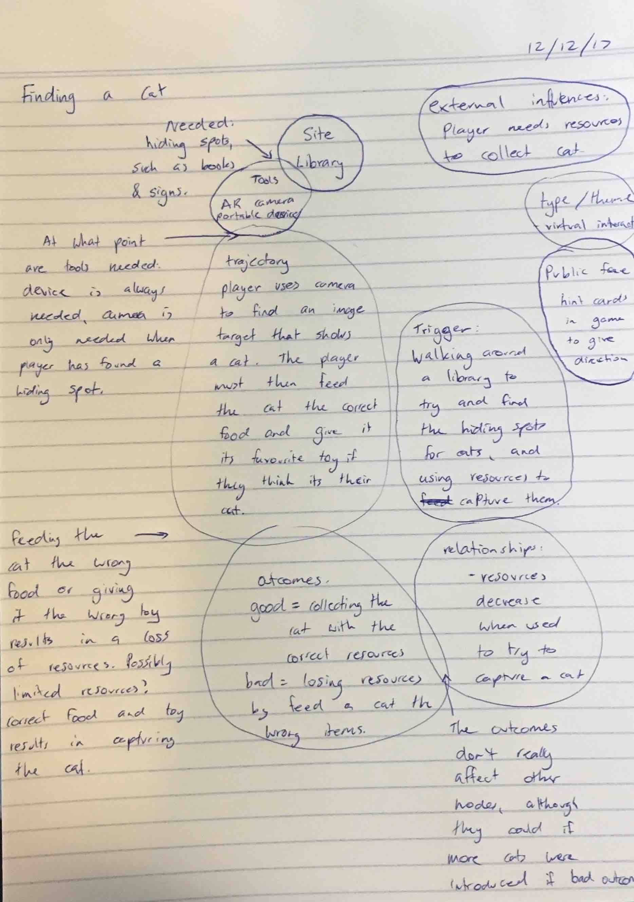
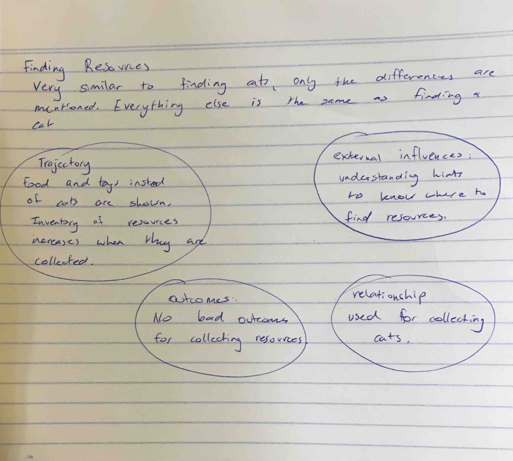

Week 1
25/11/17
Quantum Themes
Superstition: a quantum system can simultaneously be in two different states at once.
Entanglement: Two classical particles can be correlated with each other.
No cloning: cloning cannot be done, only noisy copies.
The delayed choice experiment: what happens in the present can change what happens(ed) in the past.
Path integral formulation: the probability of a particle that at some place will be at some different place later can be given by a rule.
27/11/17
A Few Initial Ideas
- Related to the delayed choice experiment, a user can make changes to the game’s past by going to specific locations and completing tasks. Their actions would affect the past in the game.
- Related to entanglement, two players are ‘entangled’ and both have to perform the same actions, such as going to a specific location.
- Related to no cloning, a game that tries to illustrate the impossibility of cloning by having two players trying to create the same pattern but with different shapes. Would need revisions to make it more location dependent.
- Related to path integral formulation of quantum mechanics, a chance game where a user can walk around to change where a user can walk to change a probability meter on an app, which shows the probability the particle will move to where the user is. The aim would be to find a location with a high chance of the particle moving to, to earn some kind of reward.
01/12/17 – Game in a Week
Laying Down a Foundation
Applying the framework to the concept that demonstrates the path integral formulation.
Motivation
My motivation is to explore a particular concept. This game would be exploring the concept of the path integral formulation of quantum mechanics.
Aims
For participants, I want to make this theme of quantum mechanics easy to understand, through a fun, interactive experience.
The aim of the participants in the game would be to win the game, by successfully guessing where the particle will move.
Outcomes
The specific goals I have in mind are to create a fun, engaging app that is most importantly educational on this theme of quantum mechanics. The success of these goals will be measured through user testing.
Inspiration
Focus: People
The games I have found that have been designed for a similar audience focus on providing clear instructions and explanations, to educate the younger audience on a quantum theme.
They are also often fun and engaging, to make it feel like they aren’t educational.
Site
My concept does not require a large site, but just enough room for the player to move around and change their position.
The style of site that would best suit the concept is an area of space based on the player’s location. For example, a radius of 15m around the player would be sufficient to play the game.
The properties the site would need to have are few obstacles and the ability to somehow be in most spaces of the site. There are few other requirements of the site, as the focus is not on the site itself but the space.
Focus: People
The target audience, being younger audiences, would most likely be found in their home. A player’s home would make a great site for the game.
People
The people that will participate in my experience would be those that have access to a phone, enjoy interactive games, and have an interest in quantum mechanics. This would most likely be the demographic of high school aged children.
The impact on people/bodies by activities occurring as part of the experience would depend on where the user plays the game. If played in the private of their own home, the only people that could be affected are those that also live in that home. If played in public, the public community may take notice of the activities involved in the experience, but this would have little impact on them.
Some statistics on elementary and high school aged students


(Pearson, 2015)
Resources
From a participatory point of view, it is assumed users will have basic skills, such as moving around, comprehending instructions and a basic understanding of technology. Very little resources are required for the game, just a space to move around in and some form of smart device.
From a development point of view, the knowledge to create the app will be required and an understanding of the path integral formulation of quantum mechanics.
New Aspect
A new aspect that could be introduced to the game is a timer that restricts the amount of time the player has to find a spot with high probability. This would improve the game by adding an element of urgency, making the game more difficult and also more entertaining.
Changed Aspect
A changed aspect for the game could be the motivation, aims and outcomes. The current aim of the participant playing the game is not very exciting. A possible change could be the player must try to get a particle in a hole, and the probability of the particle landing in the hole will change as they change their location.
This aspect would improve the framework by creating a clearer objective to the game, and a clearer method for how to win and lose. This new aspect would also allow for more advanced levels, with the hole becoming smaller as the level increases, making it harder to find a location with a high probability of the particle landing in the hole from that location.
See Annotations
Annotations:
Doing the game in a week, I interpreted the new aspects and changed aspects as new and changed aspects of the game, not of the framework. I learned in the studio that this was actually meant for the framework itself, although having to think of new and changed aspects of my game was actually helpful and really encouraged me to iterate on my design decisions and not become stuck in my ways. From this experience, I think a new aspect the framework could have is a ‘design variations’ that encourages the user to look back at different sections and re-think their decisions, or even just brainstorm alternative ways to do things so that they aren’t so focused on one idea (possibly even the first idea) that they might have thought of. This section could also involve some prompts to think outside the box with their project, such as the exercise we did in the studio session that involved thinking of a way to only use one button for each of our initial project ideas. Although these ideas may not be used in the final project, it helps to spark creativity and think about the project in a new way. This would improve the framework by encouraging more iteration on decisions, and looking back on sections of the framework in a new light.
Experience Itself
Theme/Narrative
Theme: chance/strategy
Narrative: the particle in context of quantum mechanics
Linear path: The ‘wrong’ path is choosing a position that doesn’t result in the particle landing in the hole. This doesn’t have any consequences, however the player would not advance in the game.
Back to Top
Week 2
05/12/17 - 06/12/17 – Week 2
Cutting Down Ideas
Today’s focus was cutting down ideas to make a shortlist of the ideas that will be created. The day started with brainstorming ways to play all our games with only one button. This was helpful in thinking outside the box with our ideas. It also highlighted the ideas that had very little interactions, as it was easy to think of a way to play it with only one button.
Quantum buddy - classroom coloured corners
- one button to change the colour of buddy .
- Randomly generated
- Option to create more clones through shaking.
Time travel – the past can affect the future.
- Half press button for action
- Full long press for time travel
Path integral formulation – predict where the particle will move in a room
- One button to select the location you’re at. Locks in current location.
We also had an expert in quantum mechanics come talk to us to give some clarification for some of the ideas. We especially focused on observing photons.
After our quantum discussion, we went to the natural amphitheater to do an activity and also narrow down our ideas. The shortlist of ideas were quantum tic-tac-toe, cat cloning, and escape room. We then split up into to groups to do an activity with each of these ideas; I was in the cat-cloning game group. The activity involved changing the location of the game to where we were. This meant we observed the location, and brainstormed ways the cat-cloning app would suit this space. I drew a sketch of the location illustrate the areas of the space that would be useful. It was important that there were places the cat could hide, which there were plenty of around trees and rocks. However, since the hiding spots would be much easier to find cats in comparison to in library books, we thought introducing a more complicity was important. I suggested having to chase the cat when its found, making the game more challenging, while also suiting this new space since it’s a very open. Since an older audience would be less inclined to run around to catch a cat, this would be more suited towards a younger audience (9-14 years old). We also decided on how the game would be played. I suggested that you have to offer a correct toy and correct food to capture your cat, and there could possibly be limited resources. The resources could also be something that you have to find in order to capture a cat.
We also thought of making it more difficult by introducing more cats if the player picks the wrong cat.
needs image
Week 3
12/12/17 – Week 3
Getting Started with Cat-Cloning App
Today we used the framework to go through the main nodes for the cat-cloning app, and also discussed the foundation.
We first decided whether we would make the game outdoors and targeted towards a younger audience (9-14), or inside a university library targeted towards an older audience (17-21).
After weighing up the advantages and disadvantages of each option, we decided using a library makes more sense, since its on campus where this target audience exists. Using a library also provides more opportunities for using AR, since books would work well as image targets.
We created a list of potential UQ libraries that could be used, and we found that books relating to quantum mechanics were found mostly in Dorothy Hill Engineering library, so thought this would be suitable.
We then visited the Dorothy Hill library to look for potential places a cat could hide. We also took photos of book covers that could be used for cats and also resources (quantum books for cats, food books for food items, and books related to play for toys). We made observations and took notes from the library visit, which can be seen in the images below. These observations are noted in more detail when discussed with the framework below.
IMAGES OF BOOKS AND WEEK 3 NOTES
Nodes
The main nodes for the cat cloning game are finding a cat and finding resources.
Finding a cat:

Finding resources:

I also had a discussion with Steven about the technology that could be used to incorporate AR into the app. We decided a Pokémon Go style AR system would work well, where the user can see a map, and can activate AR mode when they would like to collect something. Vuforia seemed like a pretty easy to use program that could facilitate this. I spent the rest of the session trying to install Vuforia and get it working, which I managed to get working on my computer – the next step is to get it working on my phone.
I applied the discussions we had during the session to the framework after the session.
Two possible motivations:
- To ‘explore a particular issue’ of quantum mechanics and showcase this in a playful way. For the cat cloning game, the quantum theme would be that cloning is not possible and only noisy copies are produced.
- To explore a location. This site focus would involve using the aim of finding cats as a method for exploring a site. A site option is a library, as this allows for many ways of exploring the area, such as floor plan, wall hangings, books etc.
Aims
Participants:
- For people to enjoy playing the game
- To possibly learn how to practice finding books in the library
Myself:
- Incorporate AR technology to bring the physical world’s site more into the digital world.
Outcomes
Goals: turn a library into an interactive, fun environment. If users find the game a bit challenging, this would be one way to indicate success.
Inspiration
Tech:
- Pokémon GO

(Pokémon GO, 2018)
Pokémon GO has a similar target market to the audience we’re creating our app for. I like the way that the main part of the app is a map that shows where Pokémon are, and the AR only happens when the user is within the vicinity of the Pokémon. This means the app doesn’t use up as much battery constantly using the camera, and gives the user an idea of their location. Having the main screen of our app as a floor plan of the site would also give the user an idea of their surroundings and where to look. This would be a more achievable option than doing location tracking, since the site is only a small space and therefore cant utilise map tracking.
- AR drawings

(QuiverVision, 2016)
QuiverVision’s 3D AR drawings use a similar technology to what we would like to use in our app. The idea of having an image target that shows an object when the camera recognises it would be a playful way to find cats, food and toys. Book covers would also work well as image targets due to their unique patterns and high contrast. It seems like Vuforia will be a good tool to use for achieving this kind of AR.
Site
Options
Library:
- law library
- Dorothy Hill
- Social sciences
- Biology
Other:
- park
- whole campus
Considerations:
- would be beneficial if we could access a floorplan for the site, making libraries preferable.
- More oportunites for cracking codes and complex hiding spots in a library.
- Outdoor areas could incorporate running and more high intensity activities
- Easier to look out of place in a library due to quiet and reserved environment. However this has potential to be incorporated as a challenge in the game, and if a wrong cat is selected something could happen to make the player look out of place as punishment.
In general:
- the site needs to be large enough to have many hiding spots and space to move around
- a library would best suit the ideas/context due to being able to hide cats in books etc. This would be targeted towards a different audience than if the site was outdoors, as a library site would focus more on skill and comprehension of clues, looking for books and also having access to the chosen library, over being outdoors where the focus would be more on searching much larger areas of space and chasing and looking for cats.
Properties required:
- hiding spots
- potential for clues
- not too crowded
Observation of Dorothy Hill Library:
When first walking into DHL as a group of four, it did feel like eyes were on us. This was my first indication that playing a game in a library might be embarrassing if attention was drawn to you.
To make people feel comfortable playing this game in a library, it would have to be as inconspicuous as possible. Observations were noted of the behavior of those in the library, so that the game could involve similar actions for the player to blend in.
Actions and behaviours of people in the library:
- sitting at table on computer
- looking for books
- checking out books
- studying
- very quiet
- listening to music
- typing on keyboard
This is the floor plan of the DHL that will be used as reference for the main page map.


(The University of Queensland, 2018)
See Annotations
When observing the site, I only took a few notes as can be seen in the image above. The notes mainly included the typical actions of the people in the site, the general layout, and some catalogue numbers of books that could be used as image targets. Although this was helpful, the framework definitely gave me more aspects to think about for the site. Even if I had already thought about some of the points, applying my thoughts to the framework encouraged me to write it down. Writing down what I observed in the site using the framework as a guide definitely squeezed a lot more information out of my brain; thoughts that would have inevitably disappeared if I hadn’t noted them down.
People
Two options:
The game has potential to be targeted towards young teens (12-17) or young adults (18-25). The game would have a different gameplay depending on the audience, with targeting the game towards young adults making the focus more about cracking codes, understanding clues and finding out where cats are hiding.
Targeting the game towards teens would be more about catching, rather than solving puzzles. This would involve more high intensity activities to catch cats.
With the location options at university, it makes more sense to target the game towards young adults, as this audience has constant access to the libraries, which is an ideal place for solving puzzles. Teens would still be a secondary audience, as there are often school excursions where they could access the library and use the game as a way to explore the site.
Finding (out about) People
This app would hopefully draw attention to the library and attract people to going there. So the focus would be attracting new visitors over designing for current library goers who would most likely go to the library to study or find a book.
Allen Bevans, a UX researcher as Google, has identified five distinct segments of players based on these dimensions:

(Bevans, 2017)
The cat cloning game has no in-game social aspects, but would require the player to have a passion to play the game. This would therefore define the players as ‘playful explorers’.

(Bevans, 2017)
This category of player prefers puzzle games, and also like strategy and adventure games, and the cat cloning game would fall under these categories.
The cat cloning game will most likely be more appealing to females than males, due to its nature. However, no genders will be excluded from the market and the game’s development will not be influenced by the target market’s likely gender.
Back to Top
Week 4
20/12/17 – Week 4
Testing with Vuforia
I’ve been using this link to learn how to use Vuforia in Unity:
https://www.sitepoint.com/how-to-build-an-ar-android-app-with-vuforia-and-unity/
So far it has been very helpful, and I have been able to create a demo app that displays a little warrior (which I got from the Unity asset store) when a target image is recognised. I’ve been playing around with its capabilities and seeing how much it can recognise. The target image has to have a lot of definitive patterns and contrast so that the camera is able to pick it up. I have tested it with a couple of the book cover images and it works, however the real test will be seeing if it still recognises these book covers when I’m not just testing it with the image I’ve uploaded of the book cover, but the actual book cover.
Getting the app to work on my iPhone turned out to be a bit of challenge. To get it on my iPhone, I had to update my phone, Xcode, my computer and Unity. Eventually, I got it to work! I used a random book and random asset for the demo, and found a Kitten asset from the Unity store and made a more fitting demo using a book from the library as the target image.
SCREENSHOTS
I plan on using this break to try to get the technology working well, so that when I go back to the sessions its easy to adapt it to our idea, and build upon with my group.
Back to Top
Week 5
05/01/18 – Week 5
Applying the Framework
I spent this last week of the break to focus more on ‘the experience itself’ section of the framework, which I haven’t really touched on yet apart from looking at the main nodes before going on break.
Experience Itself of ‘Quantum Cat’
Theme/Narrative: the narrative to Quantum cat is that the player has lost their cat and has to find it with the challenge of slightly different clones appearing. The narrative is non-linear, since there is no clear path for the user to experience. The user’s experience is created by the choices they make in where they explore, and collecting resources and cats.
Trajectory
At a participant level, users will need to find the correct books by using the hints, to find the correct resources and cat.
At a system level, the app will need to know when the user has found an image target, when they have collected resources, and when they give a cat correct or incorrect food or toys.
At a content level, there will need to be objects for each of the cats, the types of toys, and types of food, as well as image targets for each of these objects.
At a dependency level, the user must solve where to find the books containing resources, collect the resources, find the book that contains the correct cat, and feed the cat the correct resources.
TRAJECTORY IMAGE
Tools
Participant owned: mobile/smart phone/tabet with camera
Site owned: books
Introduced by you: Vuforia, Unity assets, android device for testing, images of book covers, graphics.
Users will know what they’re supposed to do with the facilitators through using the hint cards.
Automated “hands-off” system.
Public Face
Since the app is being made for the competition, we haven’t really thought about the public face of ‘Quantum Cat’, since it wont actually be made public. However, the app will have consistent visual styling.
See Annotations
Annotations
Most of these points were things that had already been decided upon, and applying the framework just involved writing them out. Although writing them out is beneficial, it felt more like the framework was a guide for documentation rather than a guide for design. I may have had a different opinion if I had used this section of the framework to come up with an idea, however our idea mostly developed naturally through discussion and brainstorming, and this feels much too structured to be have been applying in the early days...
Week 6
09/01/18 - 10/01/18 – Week 6
Back to Sessions
Prompt - Current snapshot of where I’m at:........
changed aspect: hard to tell wether my judegement is correct in deciding what to think about from the framework. Would be good if there was a more tree diagram method that specifices the most important things.
As a group, we had a detailed discussion of how the game would actually be played. Hints are a big part of playing the game, to the give the user direction and actually give the game a purpose.
We were trying to decide how hints would work – whether they’re something that’s just given, something the player has to collect, or the player has a limited amount. To help us make these decisions, I brought out the framework to look at the nodes section.
We started with trigger options. We had:
We started with trigger options. We decided the options were:
- button press + limited hints
- button press + infinite hints
- button press + time restrained
- AR hints + finding them
- Non AR hints + finding them on map
We also had to decide the trajectory for hints:
- one hint for entire game that tells the player what to look for
- one ‘free’ directional hint that gives the player a general idea + 3 specific hints that replenish every hour
We decided for the sake of time, and my Unity skills, we would start by implementing the simplest option of one hint card that is available the entire game and tells the player what to look for.
See Annotations
Annotations:
Using the framework to try and help us make this decision made me realise that the framework’s nodes section is helpful for defining the elements that need to be considered for a point of interaction in the game, however didn’t provide much assistance in making these decisions. Although the framework isn’t meant to be an answer booklet, it felt frustrating to have no new ideas after bringing out the framework. Once we all decided on the trigger for hint, the rest of the node sections felt more irrelevant, as most of the elements were either obvious to our game or we had already decided upon.
Went to library to see if image detection worked on the books – it did
Unity kept crashing when trying to add a button when an image target was detected. After research I found out this was because Vuforia doesn’t have an updated release to work with the updated version of Unity. Going back to a previous version of unity would mean I’d also have to go back to a previous version of Xcode to get the app running on my iPhone. However, a previous version of xcode would not be compatible with my iPhone version. I spent some time looking into alternative AR tools, however vuforia was definitely the easiest to use, possibly because I already knew how to use it. I downloaded a previous Unity version and there was no longer any crashing. I then had to learn how to put a unity app onto an android phone, which turned out to be a lot quicker and easier than playing on an iPhone.
Back to Top
Week 7
16/01/18 - 17/01/18 – Week 7
Incorporating Graphics
Got a button working. At the moment we’ve decided to keep it unlimited resources. This can always be changed if we want to, but it’s important we get most of the app working before spending time on specific gameplay details, such as having limited resources that can be collected.
IMAGES OF OLD BUTTONS
IMAGES OF NEW BUTTONS
Incorporating toys
Back to Top
Week 8
23/01/18 – Week 8
User-Testing and Working on Game
Hint cards
User testing – changed from button to click object.
Back to Top
Week 9
30/01/18 – Week 9
Finishing Up
Improving narrative
Back to Top